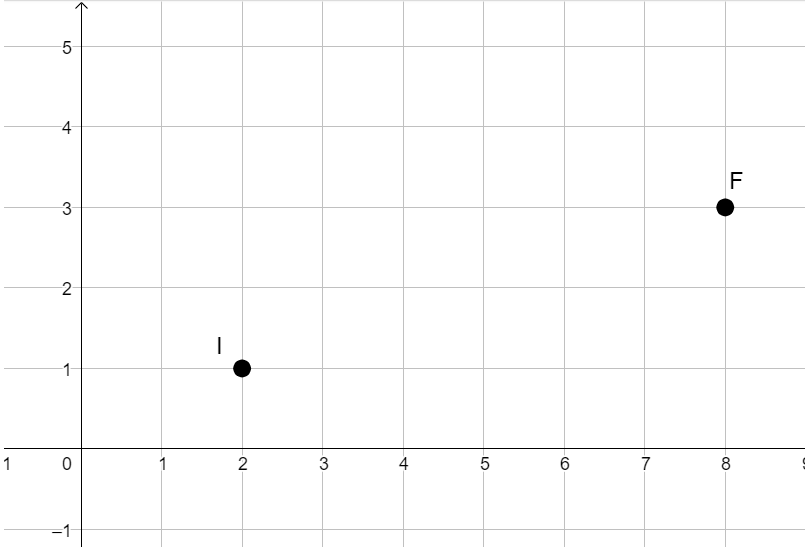

Compiti per casa
⚠️⚠️ Dopo aver studiato la parte introduttiva svolgete i tre esercizi che trovate di seguito. Saranno il trampolino di lancio
per la prossima lezione.
Interpolazione lineare - 2D
Consideriamo due punti sul piano cartesiano, il punto iniziale \(I(2\,;\,\,1)\) ed il punto finale \(F(8\,;\,\,3)\)

Usando il risultato ottenuto nell'episodio precedente, sappiamo il polinomio di primo grado
\[
x(t) = 6t + 2
\]
è tale che
\[
\begin{cases}
x(0) = 2
\\\\
x(1) = 8
\end{cases}
\]
In maniera analoga possiamo individuare il polinomio
\[
y(t) = 2t + 1
\]
tale che
\[
\begin{cases}
y(0) = 1
\\\\
y(1) = 3
\end{cases}
\]
Consideriamo un punto \(C\) che abbia come coordinata \(x\) il polinomio \(x(t)\) e come coordinata \(y\) il polinomio
\(y(t)\)
\[
C\left(6t + 2\,;\,\,2t + 1\right)
\]
La posizione di \(C\) chiaramente dipende dal parametro \(t\).
-
Al tempo \(t = 0\) il punto \(C\) si trova nella posizione del punto \(I\).
-
Al tempo \(t = 1\) si trova nella posizione del punto \(F\).
-
In corrispondenza di tutti i valori \(t \in (0\,,\,\,1)\) il punto assume posizione lungo il segmento che
congiunge \(I\) ed \(F\)
In generale abbiamo il seguente risultato.
Interpolazione lineare - 2D
Dati due punti
\[
I\left(x_{_I}\,;\,\,y_{_I}\right) \qquad F\left(x_{_F}\,;\,\,y_{_F}\right)
\]
il punto
\[
C(t) = \Big((x_{_F} - x_{_I})t + x_{_I}\,;\,\,(y_{_F} - y_{_I})t + y_{_I}\Big)
\]
è tale che
\[
\begin{cases}
C(0) = I
\\\\
C(1) = F
\end{cases}
\]
Definiamo il punto \(C(t)\) interpolazione dei punti \(A\) e \(B\).
Esercizio 1
Determinare l'interpolazione \(P(t)\) dei punti
\[
A(2\,;\,\,3) \qquad B(4\,;\,\,7)
\]
Esercizio 2
Determinare l'interpolazione \(Q(t)\) dei punti
\[
B(4\,;\,\,7) \qquad C(10\,;\,\,3)
\]
Esercizio 3
Determinare l'interpolazione \(S(t)\) dei punti
\[
P\big(2t+ 2\,;\,\,4t + 3\big) \qquad Q\big(6t + 4\,;\,\,-4t + 7\big)
\]
Suggerimento
Non lasciamoci impressionare dalla presenza del parametro \(t\) nei punti da interpolare.
Abbiamo una formula, usiamola pedissequamente.